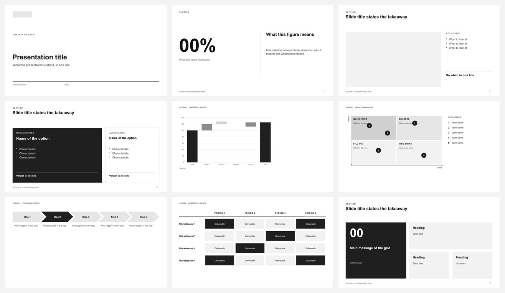

54 slide layouts and 81 charts and diagrams
Signature and Expressive visuals, shown last, are opt-in: the skill uses them only when you ask or when the content clearly suits them, and sparingly, adapted to the request and the audience.
Make Clean PPTX is a free skill for AI assistants such as Claude, Codex, Cursor and Copilot. One message per slide, real charts, never invented numbers. Neutral on purpose, so your brand colours drop straight in.
Free and open source (EUPL-1.2), your decks are yours. En français

Signature and Expressive visuals, shown last, are opt-in: the skill uses them only when you ask or when the content clearly suits them, and sparingly, adapted to the request and the audience.
Give it your notes, a report or a rough outline. It plans one message per slide, picks a design and a chart from this page, fills them with your content and checks the file.
In Claude.ai or Claude desktop: download make-clean-pptx.zip, turn on Code execution and file creation in Settings → Capabilities, then upload the zip under Skills.
Claude Code: /plugin marketplace add MaximeRumpler/Make_PPTX, then /plugin install make-clean-pptx@make-pptx.
Other assistants: npx skills add MaximeRumpler/Make_Clean_PPTX.
Make a 10-slide deck from this report for the board.
You get a PowerPoint file you can edit, with charts that stay charts. Content you cannot share? Ask for a skeleton deck to fill in yourself: private mode.
Give it your company's PowerPoint theme or template and your logo: colours, fonts and covers follow.
Make Clean PPTX gives a deck its structure. The two others, in preview, take that same deck further. Each works alone and each one writes a copy next to your file, never over it.
Notes in, a clean deck out: the designs on this page.
You are hereThe same deck in another look: rounder or paper-like shapes, staggered layouts, quiet backgrounds.
See the eighteen stylesYour three or four brand colours, fonts and logo as a real PowerPoint theme, checked for readability.
See a before and afterAll three, with install steps: the Make PPTX home page.